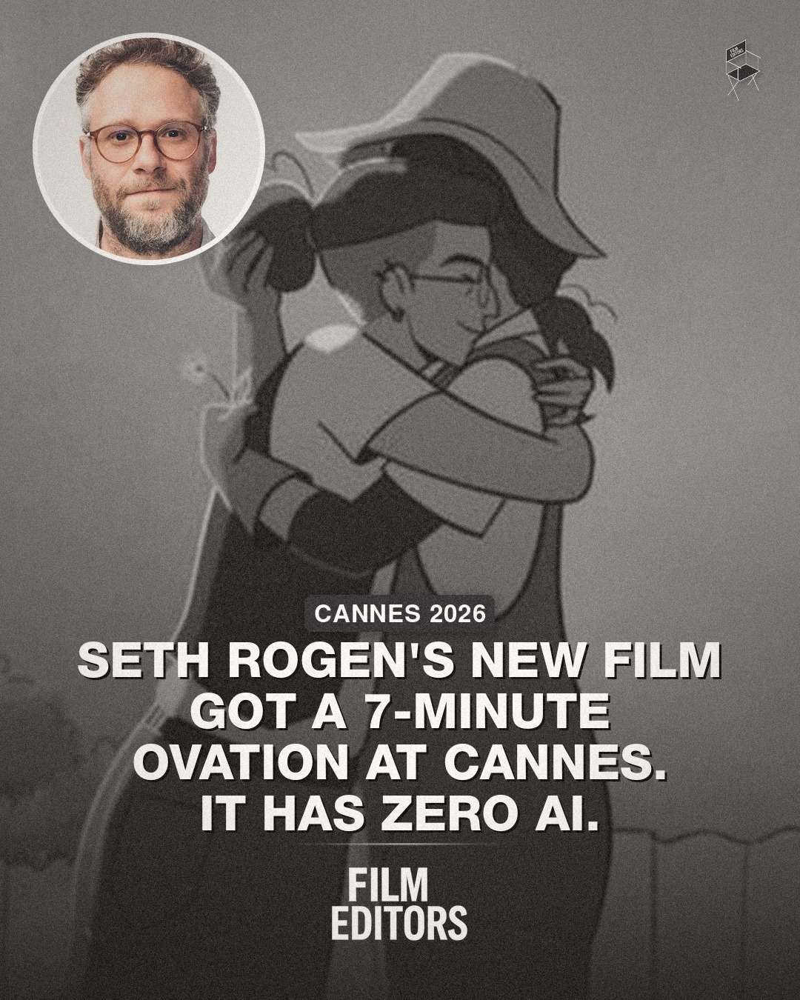
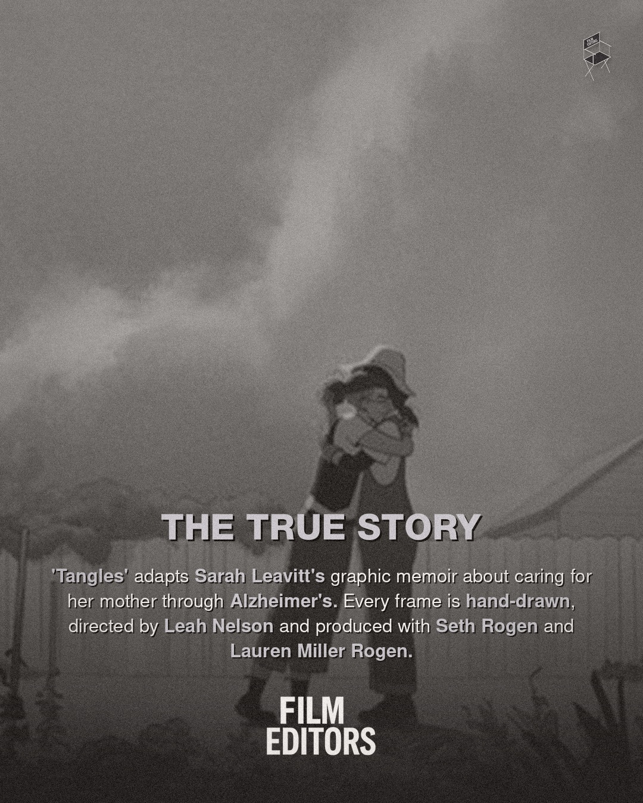
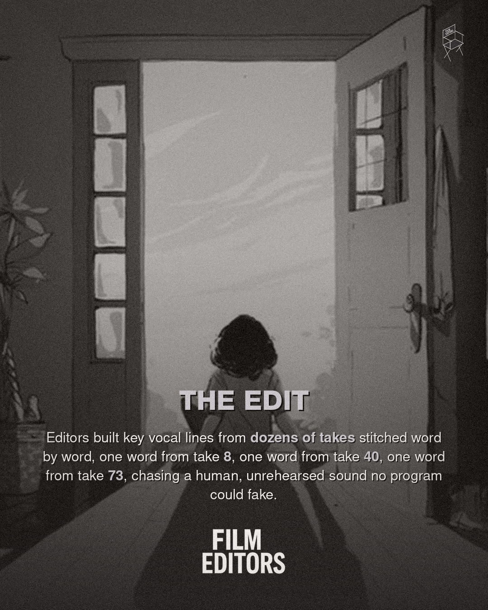
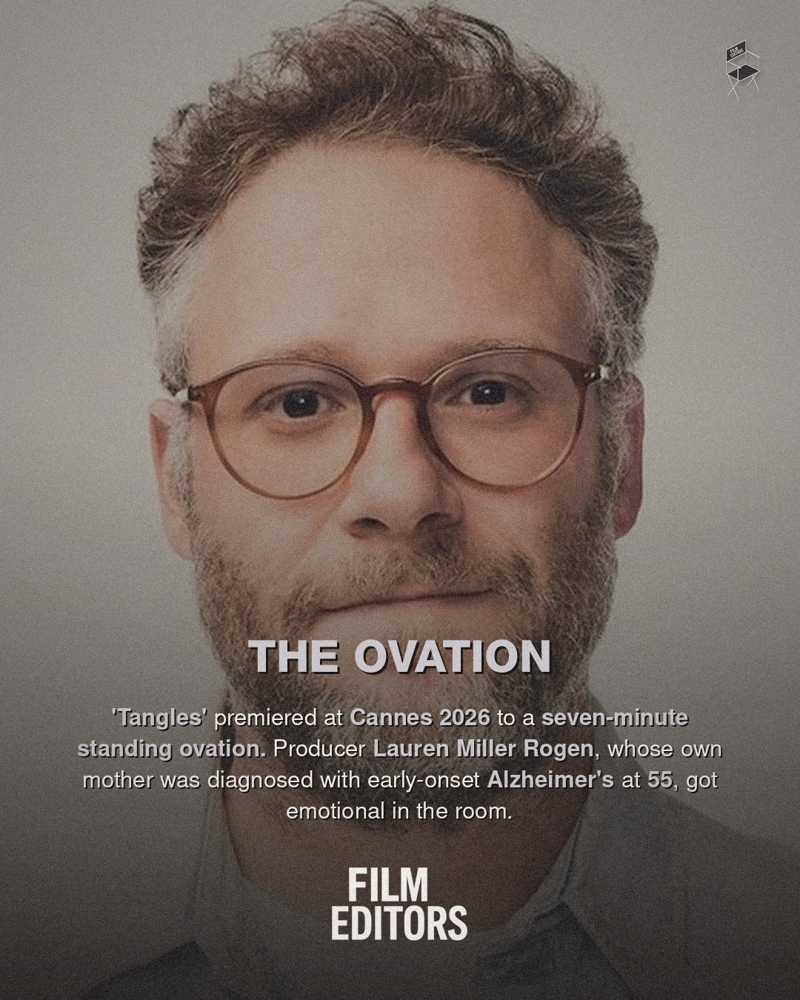

Instagram Post

'Tangles: A Story About Alzheimer's, My Mother...
carousel (5 slides) (enriched by ClaudeClaw)
Summary
CANNES 2026 SETH ROGEN'S NEW FILM GOT A 7-MINUTE OVATION ... | CANNES 2026 SETH ROGEN'S NEW FILM GOT A 7-MINUTE OVATION ... | FILM EDITORS THE TRUE STORY 'Tangles' adapts Sarah Leavit... | FILM EDITORS THE EDIT Editors built key vocal lines from ... | FILM EDITORS THE OVATION 'Tangles' premiered at Cannes 20...
Caption
'Tangles: A Story About Alzheimer's, My Mother and Me' is an animated feature produced by Seth Rogen and his wife Lauren Miller Rogen, directed by Leah Nelson and adapted from Sarah Leavitt's graphic memoir. It premiered at Cannes 2026 to a seven-minute standing ovation. The film is entirely hand-drawn, with a voice cast including Abbi Jacobson, Julia Louis-Dreyfus, Bryan Cranston, Samira Wiley and Beanie Feldstein alongside Rogen himself. Editors built key vocal performances by stitching together individual words from dozens of different takes, chasing an unrehearsed, human quality no program could generate.
ㅤ
Follow @OccupyEditors for more.
ㅤ
#Tangles #SethRogen #Cannes2026 #FilmEditing #OccupyEditors
1
CANNES 2026 SETH ROGEN'S NEW FILM GOT A 7-MINUTE OVATION AT CANNES. IT HAS ZERO AI. FILM EDITORS
A black and white cartoon drawing of two people hugging is overlaid with a circular photo of Seth Rogen and text about a film.
2
CANNES 2026 SETH ROGEN'S NEW FILM GOT A 7-MINUTE OVATION AT CANNES. IT HAS ZERO AI. FILM EDITORS
A black and white illustration of two people hugging, one wearing a hat and the other glasses, is overlaid with text and a circular headshot of Seth Rogen in the top left corner.
3
FILM EDITORS THE TRUE STORY 'Tangles' adapts Sarah Leavitt's graphic memoir about caring for her mother through Alzheimer's. Every frame is hand-drawn, directed by Leah Nelson and produced with Seth Rogen and Lauren Miller Rogen. FILM EDITORS
A grainy, black and white animated still shows two figures embracing outdoors, with a cloudy sky above and a fence in the background.
4
FILM EDITORS THE EDIT Editors built key vocal lines from dozens of takes stitched word by word, one word from take 8, one word from take 40, one word from take 73, chasing a human, unrehearsed sound no program could fake. FILM EDITORS
A grayscale image shows a person with their back to the viewer, sitting or standing in a doorway that opens to a bright, indistinct background, with a window visible on the left.
5
FILM EDITORS THE OVATION 'Tangles' premiered at Cannes 2026 to a seven-minute standing ovation. Producer Lauren Miller Rogen, whose own mother was diagnosed with early-onset Alzheimer's at 55, got emotional in the room. FILM EDITORS
A close-up portrait of actor Seth Rogen wearing glasses is shown, with text overlaid on the lower half of the image.
All slides


